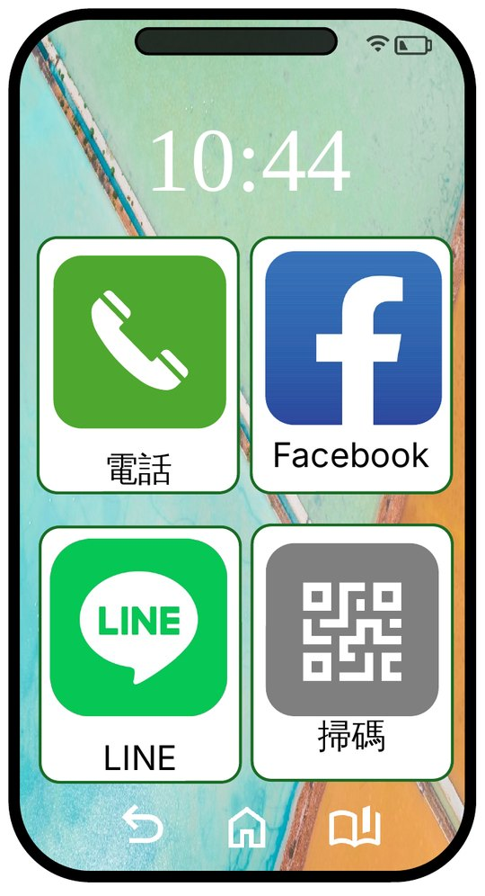
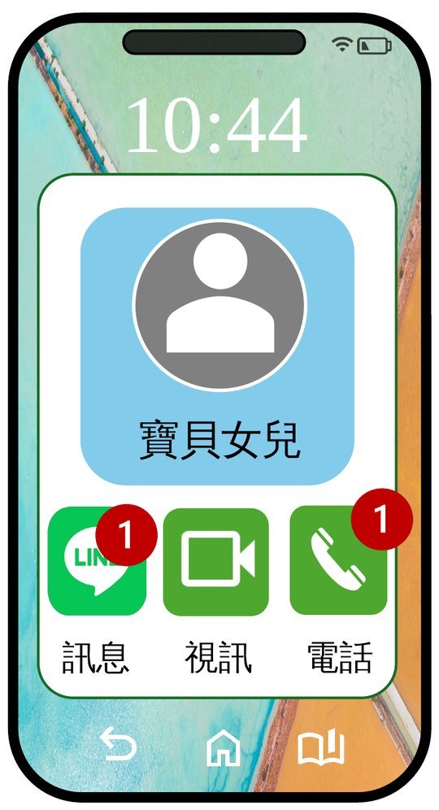
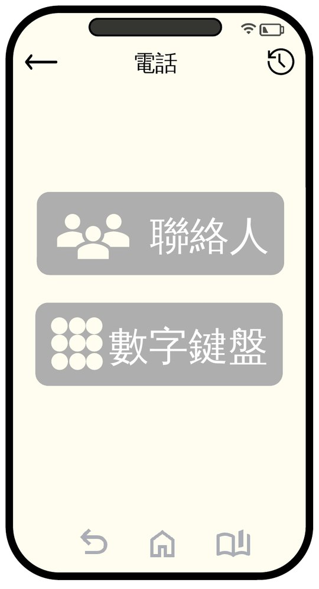
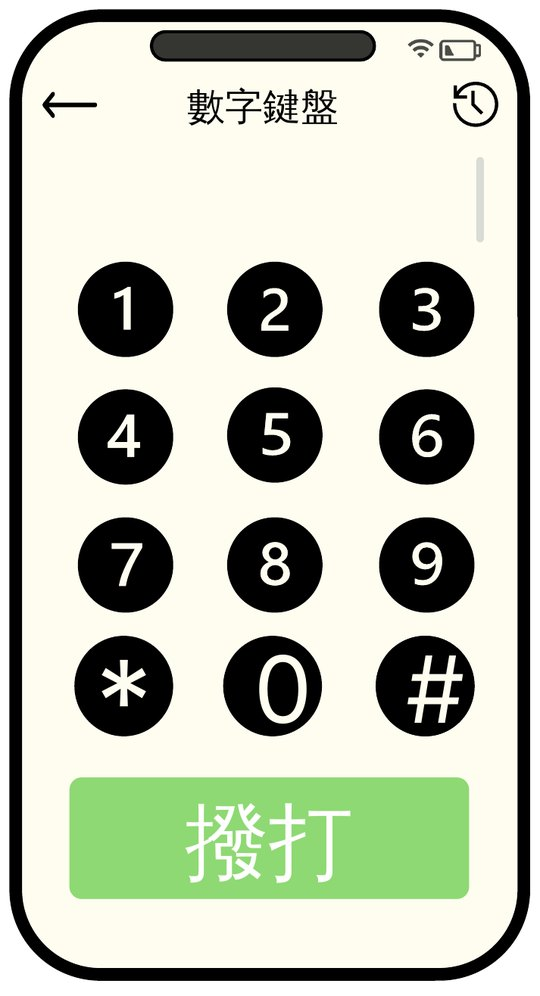
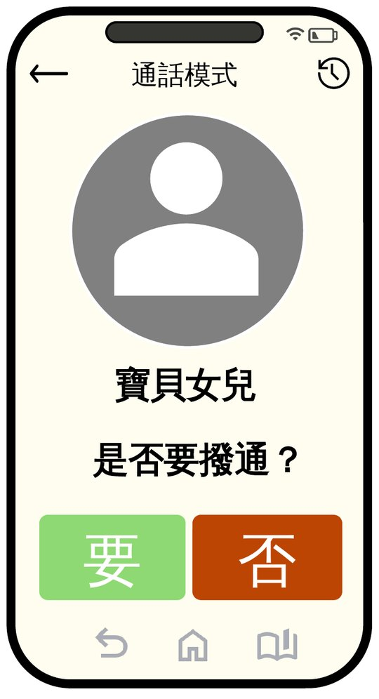
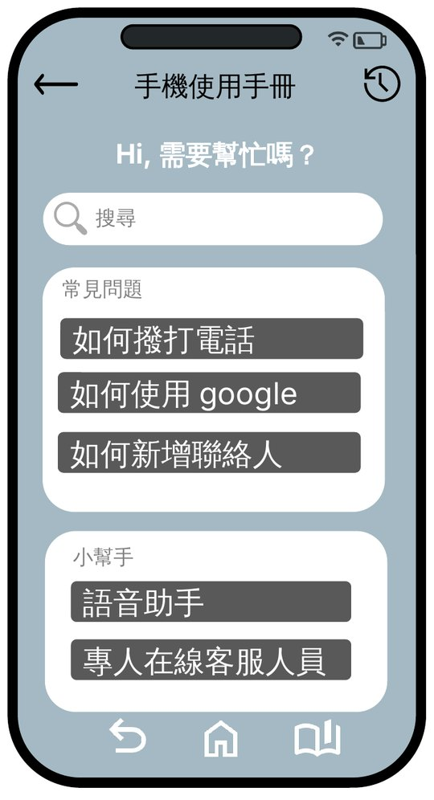

Background
Our team volunteered at a smartphone class for about 30 older adults at a community center in Beitou, Taipei.
Problem
Many wanted to learn but were afraid of pressing the wrong thing, and relied on a volunteer beside them.
Following, not understanding
Many followed the teacher's steps without knowing why each step worked.
Too much on screen
Home screens held many icons with small labels, and unused apps filled the phone.
Unclear next steps
They were unsure when to speak to the voice assistant, how to download an app, or how to scan a QR code.
Empathy map
The team mapped what older adults at the class thought, heard, saw and did.
Think and feel
- "I want to keep up with the times."
- "Free phone calls."
- "Chatting with family and friends."
Hear
- "Everything needs a phone now."
- "If you can't use a phone, you're a digital refugee."
- "Friends who use it say it's convenient."
See
- "Search, send... I can't read any of these buttons."
- "My family doesn't have time to teach me."
- "Lots of information I don't need pops up."
Say and do
- Uses voice search with a non-standard accent
- Often taps on strange things
- Doesn't know how to go back, so presses Home
Pains
- "Search can't do what I want."
- "I still forget things that are hard to remember."
- "I don't know what else the phone can do."
Gains
- "Messaging family and friends more easily."
- "A phone that isn't so messy."
- "Being able to do what I set out to do."
Persona and point of view
- Has presbyopia
- Speaks Taiwanese more easily than Mandarin
- Wants her phone to reach family and friends and share pictures
- Rarely swipes up to browse the home screen
She needs a phone screen she can understand within five seconds, because too many icons make it hard to find a function, and she forgets what she wanted to do along the way.
Asking "why" five times led the team to one root cause. Older adults are rarely part of the design and testing process for phones and apps.
How might we
Simplify the phone's logic and screens, so older users spend less time choosing a function and feel less pressure using the phone?
Help the voice assistant understand the words older users actually say, so they reach the function they want without confusion?
The prototype
The team built a clickable prototype in PowerPoint around one task, calling a contact saved as "Baby Daughter" (寶貝女兒).






Usability testing
I ran the tests and analyzed the results with one teammate. Each of four people was asked to contact "Baby Daughter," and we watched which path they took and where they paused. We ran the prototype on a tablet and a laptop.
| Tester | What we saw and heard |
|---|---|
| A teammate in an aging-simulation suit | Details were hard to see without leaning close, and the gloves could not register touches. Icons need saturated, high-contrast colors, and calling or searching could use voice control or physical buttons. The suit is an extreme simulation and differs from a real older user. |
| A retired homemaker | Stayed on the first screen. Her first move to contact someone was LINE, and she did not expect the confirmation screen. She asked for labels on apps that cannot be used and for cues pointing to content on other screens. |
| A semi-retired office worker | Also stayed on the first screen and went to LINE first. He found switching screens unintuitive, felt the task took too many steps, and suggested favorites or recent calls. |
| An older adult | Paused about five seconds at the keypad and when picking a contact, and kept looking for the words "Baby Daughter." She found the text size clear, but the green-and-white Call button hard to spot, and suggested red or black. |
What the tests showed
Fewer steps
Calling one person took too many steps. Favorites or recent calls would shorten the path.
Familiar paths
Two of the three outside testers reached for LINE first. A new layout works best when it keeps the apps people already trust in reach.
Visible actions
The Call button needed stronger contrast, and screens needed clear cues for what is tappable and what lies on the next page.
The course ended after testing, so these findings point to a next version that the team did not build.
A class project for a design thinking course. The persona and testers are described without names or photos.